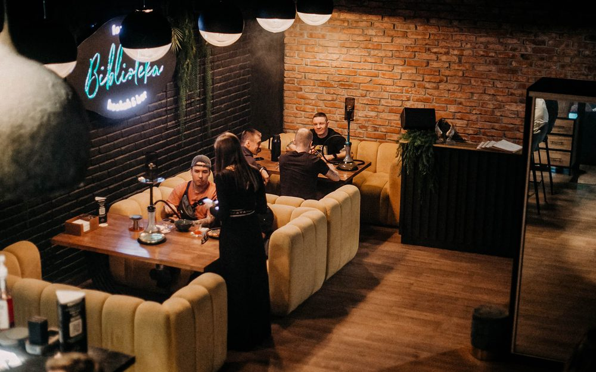

22 августа · Челябинск
Вечером


Библиотека Лаунж
Кальян-бар
«Белых рынков» в городе два. Этот — на Витебской, 4, а гастромаркет из раздела «Поесть» на Тернопольской, 6. Ехать надо по адресу выше.
22 августа · Челябинск

Кальян-бар
«Белых рынков» в городе два. Этот — на Витебской, 4, а гастромаркет из раздела «Поесть» на Тернопольской, 6. Ехать надо по адресу выше.